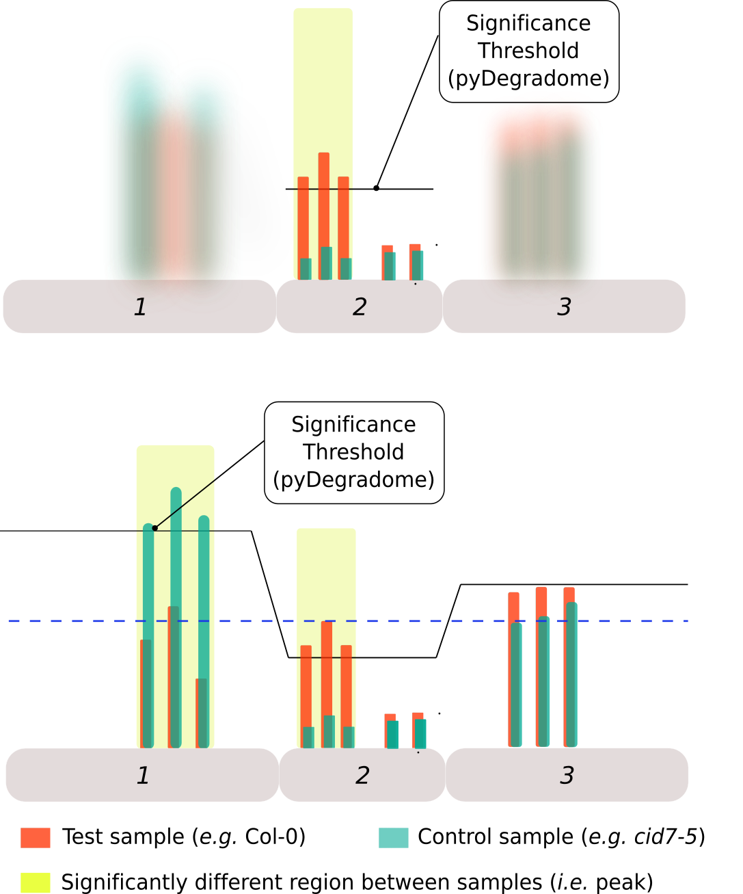

Characterization of CID7 in boron dependent mRNA degradation in Arabidopsis thaliana
Saul Sotomayor Leyton
Laboratory of Plant Nutrition and Fertilizers
2022-02-07
Outline
Outline
- Introduction
- Chapter 1: RNA nuclease activity of CID7SMR
- Chapter 2: Identification of CID7 and boron condition-dependent mRNA degradation intermediates
Introduction
Boron (B) is an essential micronutrient for plants

Modified after(1)
- Boron is essential for cell wall structure
- Uptake and distribution is regulated by dedicated transporters and channels
- NIP5;1 is a channel that mediates boron uptake
Regulation of NIP5;1 is affected by boron at the translational stage
CID7 is involved in NIP5;1 mRNA decay
- CID7 was found screening for plants with altered boron response
- In a GFP-NIP5;1 population cid7 mutants showed sustained GFP signal under mild boron concentration
GFP-signal used as proxy for mRNA abundance
Image provided by Dr. Tanaka (Tanaka, unpublished)
NIP5;1 mRNA levels are altered in candidates and cid7-5 mutant exposed to elevated B
Image provided by Dr. Tanaka (Tanaka, unpublished)
- Selected mutants showed altered NIP5;1 mRNA levels when exposed to increased boron concentrations (25 and 100μM )
- Similar pattern was observed for cid7-5 mutant
CID7 complementation rescued the B-responsive phenotype on mutants
Image provided by Dr. Tanaka (Tanaka, unpublished)
- Mutants transformed with a CID7Promoter:CID7:GFP construct showed NIP5;1 mRNA levels similar to WT plants
Questions about CID7
- Does it have RNA-endonuclease activity?
- Is it capable of degrading total RNA?
- Is CID7's activity is related to the events of ribosome stalling?
Chapter 1:
RNA nuclease activity of CID7SMR
Features that make CID7 a candidate for NIP5;1 regulation
- SMR-domain: Associated with DNA- RNA-nuclease activity
- PAM2 motif: Allows interaction with poly-A binding proteins (RNA-interaction)
- CUE2-like: Allows binding to Ubiquitin molecules (ribosomal subunits)
- DUF1771: Found next to SMR-domains and considered an extension
Outline of experimental procedures
- Expression and purification of peptide
- RNA-nuclease activity assay(1)
- Substrate: Total RNA
- Samples:
- CID7SMR: Test sample
- SOT1SMR: Positive Control
- Maltose Binding Protein (MBP): Negative Control
Modification of expression vectors (pColdIV mod)
- Takara's pColdIV was used as backbone.
- It posses only a multi-cloning site (MCS)
- pColdIV-mod has a MBP with a periplasmic targeting signal (ompA) followed by a TEV-recognition site, a MCS and a 7xHistidine tag for purification
Modification of expression vectors (pRK793v3)
- Addgene's pRK793 is a commercial vector for the expression of TEV-protease
- pRK793v3 was modified to include a TEV-site downstream the TEV-protease coding region and a multi-cloning site for the expression of other peptides
Purification of CID7SMR and SOT1SMR
- A modified pColdIV expression vector was constructed
- MBP upstream cloning site to improve solubility
- For the activity assay
- MBP-tag was removed through TEV-protease digestion (Figure left)
- Specific fractions were obtained by gel filtration
CID7SMR has RNA nuclease activity
Root total RNA was incubated with purified peptides for 30 min. at 25C
Reaction buffer (Buff) and purified MBP were used as negative controls
- Dose dependent RNA nuclease activity of CID7SMR was confirmed
Mutations in CID7SMR second motif do not affect its activity
- CID7SMR with mutations in the second motif showed increased activity
- The 2nd motif was shown to be important in SOT1 but not in CUE2
- CID7SMR domain is more similar to CUE2SMR than SOT1SMR
Chapter conclusions
- It was shown that CID7SMR domain is capable of degrading RNA
- Out of the two putative catalytic motifs, the second does not seem to be necessary for the RNA-nuclease activity
- This is unlike a previous report on Arabidopsis’ SOT1 but similar to a report on Yeast protein CUE2
Chapter 2:
Identification of CID7 and boron condition-dependent mRNA degradation intermediates
Outline of experimental procedures
Overview of pyDegradome analysis
- pyDegradome(1) aims to find endonuclease targets by comparing samples with and without a given endonuclease.
- Significant differences (peaks) are found at the exon level.
- Multiplicative factor and significance level are user-defined parameters
pyDegradome limitations and extended classification
- Limitations
- It can identify many significant signals (peaks) which may not be relevant at the transcript level
- Extended classification
- Considers signals along the transcript
- Within sample: Classification/Filtering
- Between samples: Classification
- Result: Most peaks were removed
- Considers signals along the transcript

Extended classification 1 (Filtering & classification)
- Compares peak with reads along the transcript (test sample)
- Category 1: Peak is the highest read and shared between replicates
- Category 2: Peak is not highest but at least 80% as high and shared between replicates
- Category 3: Peak is not highest but between 70-80% as high and shared between replicates
- Category 4: Peak is not shared (significant only in one replicate). Coordinates of the significant peak are used to define those on the missing. Reads are either the highest or at least 80% as high
- Category 0: Those peaks that can not be classified into the above categories were excluded
Extended classification 2 (Classification)
- Compares peak with reads on the control sample
- Averages were used to account for sample variability and reduce computation time
- No peaks were removed
- Category A: Ratio between average of peaks in test sample and average of the highest read along control samples is higher than 1
- Category B: For transcripts with 2 or more peaks; Ratio between test samples and control samples is higher than the median
- Category C: Those that can not be classified into the above categories
Mutations in CID7 reduce degradation signals upstream AUG-STOP sequences in NIP5;1
- After filtering 2 significant peaks were found on NIP5;1
- One at 5’UTR and the other at 3’UTR
- Both are located upstream (<20nt) of AUG-STOP
NIP5;1 degradation signals at 3'UTR
- Peak on 3'UTR region is located upstream (<20nt) of AUG-UGA
- AUG-STOP causes ribosome stalling (Tanaka et al. 2016) but this was not reported before (Tanaka, unpublished)
CAGEseq data suggest that B effects on NIP5;1 are specifically mediated by CID7
- CAGEseq:
- RNAseq variant: Estimates intact mRNA species
- Comparison CAGEseq vs. Degradome
- Assumption: Increases in Degradome signals should be accompanied by a reduction of CAGEseq estimates if there is a direct/specific effect of CID7/boron
CAGEseq results (Boron effect)
CAGEseq results (Genotype effect)
Degradation intermediates at exon-junction regions
- Premature stops can lead to Nonsense-Mediated Decay
- If it happens before the 1st round of translation degradation intermediates accumulate at sites where exon junction complexes (EJC) bind, 25-30nt upstream exon-junction
- Abundance of degradation intermediates is reduced in xrn4 mutants
Mutations in XRN4 and CID7 affect the accumulation of degradation intermediates close to exon-junction
Known miRNA398-mediated degradation intermediates are reduced in cid7-5 mutants
- miRNA398 is a stress responsive gene(1)
- Associated stresses: Oxidative, Water, Salt, others.
- Known targets: Cu/Zn SOD (CSD1, 2 and 3)
- Accumulation of reads in CSD2 were unaffected in xnr4-6 mutants(2)
- No peak was found in cid7-5 xnr4-6 double mutant
Chapter conclusions
- Post pyDegradome classification improved the list of degradation signals detected on candidate genes
- Degradation signals on NIP5;1 were dependent on CID7 and found closer to AUG-STOP sequences. This suggest a link between CID7's endonuclease action and ribosome stalling.
- Comparison between Degradome and CAGEseq data point to a specific regulation by CID7 in the context of increases in boron concentration
- Focus on degradation signals around exon-junctions suggest a novel link between miRNA398 and CID7
General conclusions
- Is it capable of degrading total RNA??
- Evidence of that CID7SMR had RNA-nuclease activity was presented
- Is CID7's activity is related to the events of ribosome stalling?
- Degradation intermediates on NIP5;1 were found close to AUG-STOP sequences known to be associated with ribosome stalling; this in a CID7-dependent manner.
Future directions
- RNA-endonuclease activity remains to be proved:
- Use of specific probes: Flourescent-based method
- Expression in heterologous systems (e.g. Yeast)
- Confirmation through RACE-PCR is needed (Initial attempts suggest these are true signals)
5'RACE preliminary attempts
- Amplification of NIP5;1 degradation intermediates from Col-0 plants exposed to two concentration of boron.
- Expected products: Transcription start: 710 and AUG-STOP: 274bp
Acknowledgments
- MEXT program in Bolivia
- Prof. Fujiwara and all laboratory members
- Prof. Nagata (Laboratory of Food Biotechnology and Structural Biology, The University of Tokyo)
- OICE staff: Prof. Momma and Ms. Ishizuka